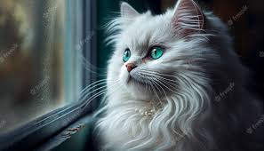

Abi's Favourie Animal

My name is Abi and my favourite animal is the Cat.The cat Name is Luna.
They are good at swimming.The cat is a domectic animal and pet animal.
Cats have very sweet features. It has two beautiful eyes,adorably tiny paws,
sharp claws and two perky ears which are very sensitive to sounds.
It has a tiny body covered with smooth fur and it has a furry tail as well.
Cats have an adorable face with a tiny nose,a big mouth and a few whiskers
under its nose.Cats can jump upto 6 times their height.
If you want to learn more about the cat,checkout its Wikipedia page
Facts about Cats...
- Cats can see up to 120 feet away.
- The average age for an indoor cat is 15 years while the average age for an outdoor cat is only 3-5 years.
- A housecat can run to the speed of about 30 mph over short distances.
- Cats are believed to be the only mammals who don't taste sweetness.
Why are cats a favourite...
- Cats offer companionship, unconditional love, entertainment, affection, lots of purring, comfortable
silences and they're trainable!
- Cats are expert communicators and gravitate towards people that they communicate well with.
- Look for communication cues from your cat, such as your cat approaching you in search of food or petting.